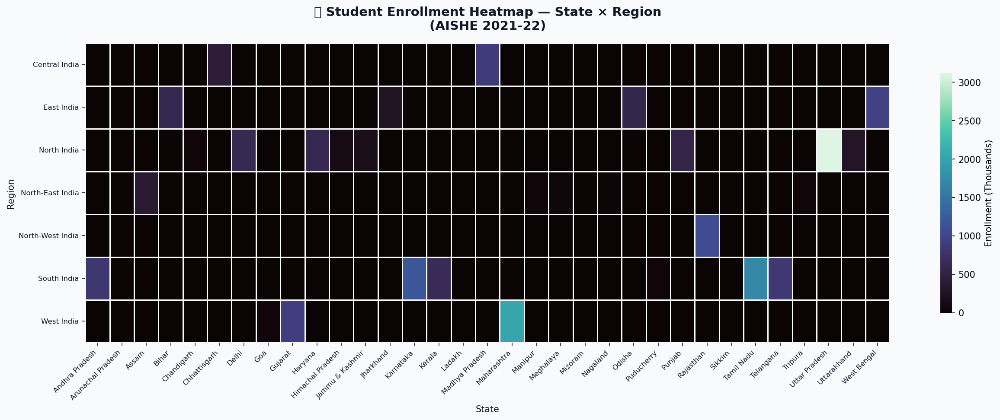

A story of how students migrate across India in search of better education — and which states are winning the talent war.
Every year, millions of Indian students cross state borders for higher education. But this movement is highly unequal. While some states have built robust educational ecosystems that attract talent nationwide, others are facing a massive "brain drain," exporting their brightest minds due to a lack of premium local institutions.
By analyzing the AISHE 2021-22 enrollment reports alongside the NIRF 2024 rankings, we identified clear winners and losers in the battle for educational supremacy.
Attracts the highest volume of out-of-state students, driven by prestigious central universities.
Acts as the primary magnet for the northern belt, boasting massive institutional density per capita.
Suffers the largest net loss of students, exporting talent to neighboring and southern states.
Leads the country in total number of NIRF-ranked institutions, especially in engineering and medicine.
Where are students leaving from, and where are they going? This Sankey diagram illustrates the massive directional flow from "Exporter" states (red) directly into the established "Hubs" (purple).
When mapped geographically, the divide becomes starkly clear. The Southern and Western coastal states, along with the National Capital Region, form deep clusters of high student retention and attraction.
Conversely, large swathes of the Eastern and Central regions act primarily as supply zones, indicating a critical need for higher education infrastructure investment in these areas.
While some states have massive total enrollments, true "Hubs" balance both scale and quality. Below is the state-wise distribution of enrollments across the nation by region.

By plotting Gross Enrolment Ratio (GER) against the Net Migration Score, we can categorize the exact status of every state. The size of the bubble represents total student volume.